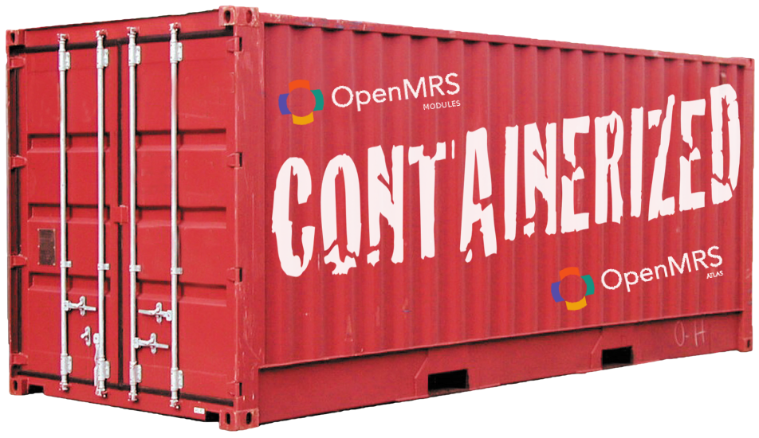
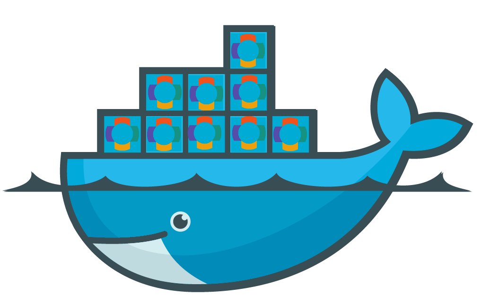

Docker for OpenMRS
Developers Forum
August, 28st 2014 / Alexis DUQUE / alexisd61@gmail.com
OpenMRS Atlas
atlas.openmrs.org
- Anyone in the community can register a marker using his ID
- Implementations can automate marker update with the module
From ...


openmrs.org/atlas
To ...


atlas.openmrs.org
Docker.io
Why Docker ?
- Find a way to easier deploy OpenMRS Atlas
- Develop and hack Atlas everywhere
- Easily distribute, share and get new contributors
- Quicly test Atlas module accross different OpenMRS version
Docker in few words
- Develop, Ship an Run application
- LXC Technology : unix isolation
- Lighter than VM - Faster start
Docker Components
Docker Engine
Daemon, CLI, Local Index
Docker Hub
Image repository, Automated Builds, Versionning, Hooks.
Requirements and Installation
https://docs.docker.com/installation/#installation
Require Linux-specific features, but solution for others !
Lucky Ubuntu Users
curl -sSL https://get.docker.io/ubuntu/ | sudo shWindows/MacOS Users
Docker Basics
Work with images and containers

Docker Pull
Pull your first OpenMRS image
docker pull openmrs/atlas:2.0-devClone dev image from openmrs/atlas repo to your local repository
Docker Run
Create and run a container using an image
docker run [params] openmrs/atlas:2.0-devLot of parameters - 3 modes :
- Background
- Foreground (default) : attach stdout/err
- Interactive : attach stdin
Docker Run - Port
Port forwarding with the host
docker run -P [host_port:container_port] openmrs/atlas:2.0-devExample : 8080 container port to 80 host port
docker run -P 80:8080 openmrs/atlas:2.0-dev80 host port shouldn't be used !
Docker Run - Volume
Shared host folder with the container
docker run -v [host_folder:container_folder] openmrs/atlas:2.0-devExample : mount /opt/dev to /opt in the container
docker run -v /opt/dev:/opt openmrs/atlas:2.0-devAbsolute path is required !
Docker Run - Env variables
Define container environement variable
docker run -e VAR_NAME=value -e VAR_NAME2=value2 openmrs/atlas:2.0-devExample : define HOST_IP in the container
docker run -e HOST_IP=127.0.0.1 openmrs/atlas:2.0-devDocker Run - Others
Others userfull parameters
Define hostname inside the container
docker run -h [hostname] openmrs/atlas:2.0-devDefine container name (~ container id)
docker run --name [container_name] openmrs/atlas:2.0-devDocker Run - Stop/Start
Start and Stop a container (!= RUN )
Start a container from your local registry
docker start [container_name] | ex: docker start atlasStop a running container
docker stop [container_name] | ex: docker stop atlasClean UP :-)
Remove useless containers or images
Delete a single container or image (-f to force)
docker rm -f [container_name] | ex: docker rm atlas docker rmi [image_name] | ex: docker rmi openmrs/atlas:2.0-devClean all containers and untagged images
docker rm `docker ps --no-trunc -aq` docker rmi $(sudo docker images -f "dangling=true" -q)Get started !
HACK OpenMRS Atlas with Docker
What's Next ?
Create an image using a Dockerfile
docker built -t [image_name] path_to_dockerfile Use Docker for production
QUESTIONS ?
Developers Forum

August, 28st 2014 / Alexis DUQUE / alexisd61@gmail.com